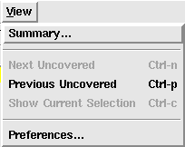

The View menu allows the user to select or change the current way the information in Covered is viewed. Figure 1 shows the contents of the View menu.
Figure 1. The View Menu
Displays the Summary Window if this window does not exist or forces it to the foreground if it currently does.
Causes the line containing the next uncovered metric to be visible in the Coverage Viewer. If the next uncovered line is already visible, this menu item will have no visible effect. The search for the next uncovered line starts at (a) the top of the module (when the module is first displayed in the the Coverage Viewer), (b) from the last uncovered line searched for with the "Next Uncovered" or "Previous Uncovered" calls, or (c) from the last currently selected line (only valid for toggle and combinational logic views).
This menu item is only enabled when another uncovered line exists after the current uncovered line. It can also be accessed with the accelerator keystroke <Control-n> or the "-->" button in the Main Window.
Causes the line containing the previous uncovered metric to be visible in the Coverage Viewer. If the previous uncovered line is already visible, this menu item will have no visible effect. The search for the previous uncovered line starts at (a) the top of the module (when the module is first displayed in the the Coverage Viewer), (b) from the last uncovered line searched for with the "Next Uncovered" or "Previous Uncovered" calls, or (c) from the last currently selected line (only valid for toggle and combinational logic views).
This menu item is only enabled when another uncovered line exists before the current uncovered line. It can also be accessed with the accelerator keystroke <Control-p> or the "<--" button in the Main Window.
This menu item is only available if the current metric mode is not "Line", the user has clicked on an uncovered segment of code, and the associated Verbose Toggle Window, Verbose Combinational Logic Window, Verbose FSM State/State Transition Window or Verbose Assertion Coverage Window exists. The currently selected line is visually identified in the Coverage Viewer area on the left-hand-side of the line containing the uncovered code. If this line is not currently visible in the Coverage Viewer, selecting this menu item will cause it to be visible.
An accelerator keystroke <Control-c> will also invoke this menu item.
Causes the Preferences Window to be created if it currently does not exist or forces it into the foreground if it does exist.